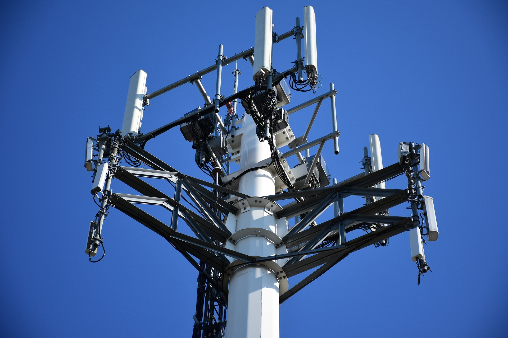
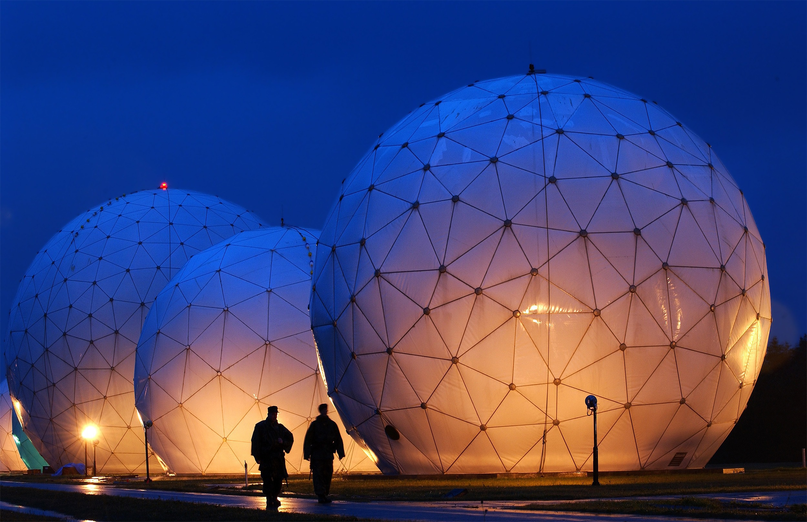

MIMO systems
Multiple-input and multiple-output (MIMO) is a smart antenna technology designed to increase the capacity of wireless communication using multiple transmit and receive antennas.
My research is being conducted based on this technology.

Full-Duplex
Full-duplex data transmission method transmits data simultaneously in both directions on a signal carrier.
I'm currently working on this technology.

Radar
Radar is a detection system that measures the distance, direction, angle, and speed of a target using radio waves.
I studied radar in college to model jamming systems for use in electronic warfare. In the future, I will conduct research by applying this technology to cellular networks.